Automatic Configuration Server
Servidor de configuração automática. Projetado para empilhar entre diferentes sistemas de automação, solicitar listas de CPE, adicionar e excluir dispositivos, atribuir parâmetros de dispositivo, manipular serviços, reiniciar dispositivos, atualizar firmware e executar dispositivos de redefinição para as configurações iniciais.
- Autoconfiguration and dynamic services preparing for work
- Software versions management
- Performance monitoring
- Diagnostics
Privileged Access Management
Solução para gerenciamento de acesso privilegiado em ambientes híbridos com a implementação e operação de controles para gerenciar os riscos de segurança da informação no contexto dos riscos do negócio.
Estabelecer políticas, objetivos, processos e procedimentos do SGSI combinando maturidade de gestão e serviços gerenciados de segurança da informação.
Gerenciar processos administrativos, suporte ao cliente e assistência técnica, de forma colaborativa e eficaz na execução das ações corretivas e preventivas, com base nos resultados da auditoria interna do SGSI e da análise crítica para alcançar a melhoria contínua do SGSI.
Monitorar, detectar e previnir atividades maliciosas relacionadas ao abuso de privilégios, com o objetivo de reduzir a superfície de ataque.
Telemetria na agricultura.
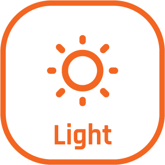
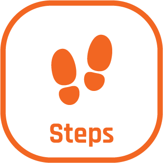
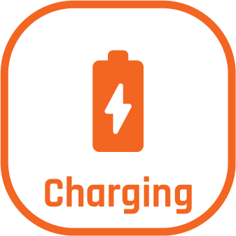
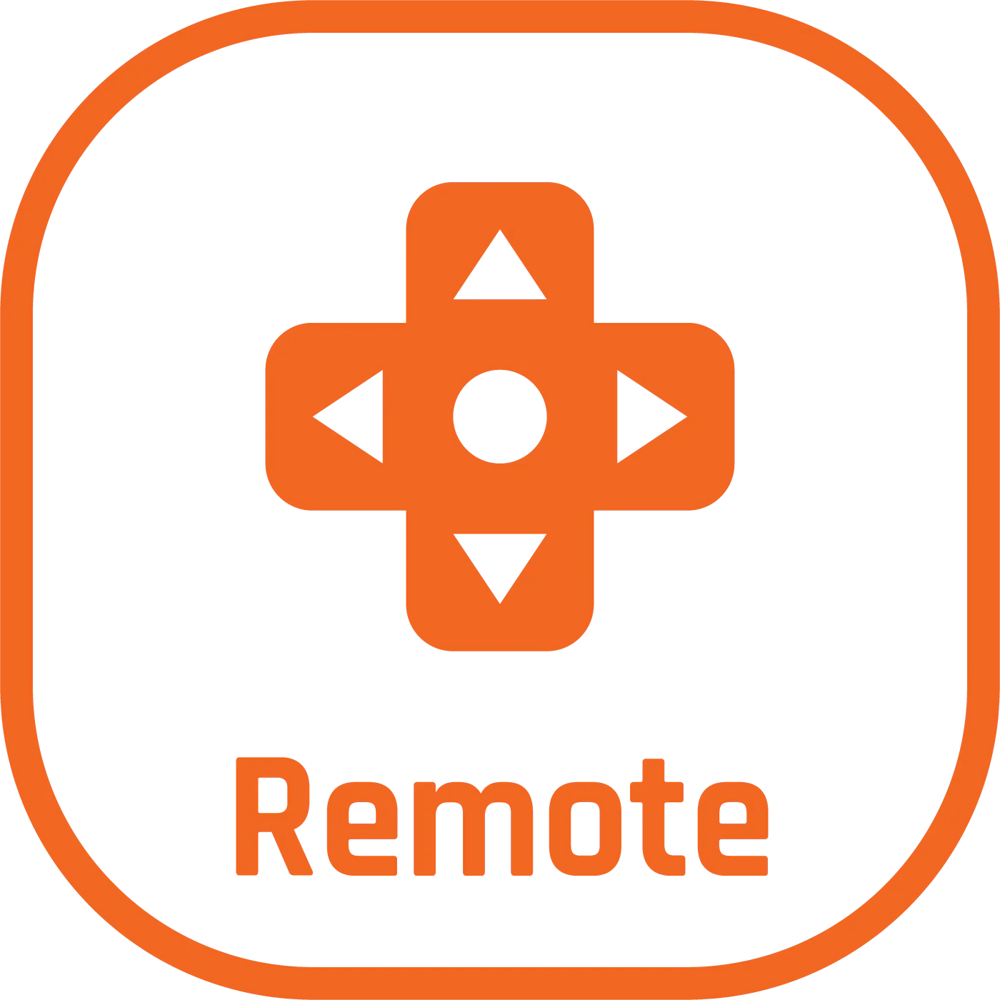
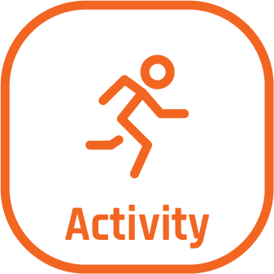
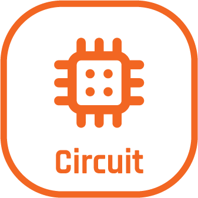
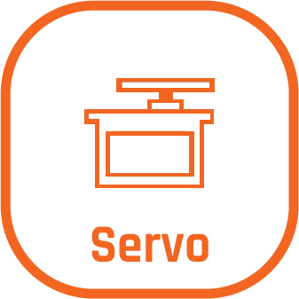
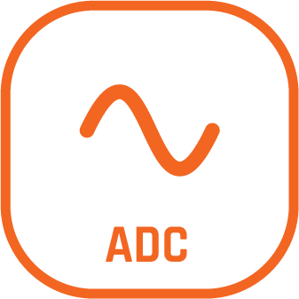
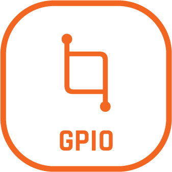
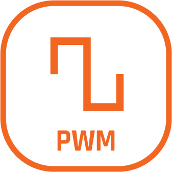
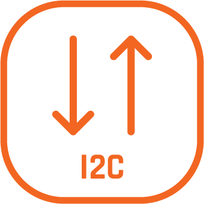
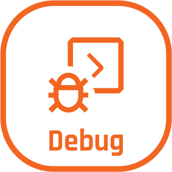
Telemetria no automobilismo.
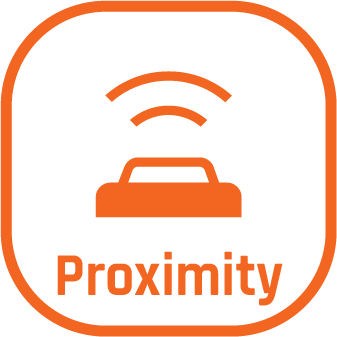
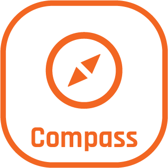
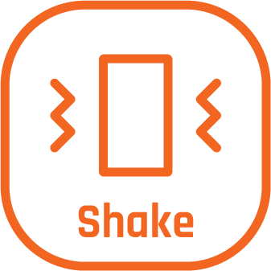
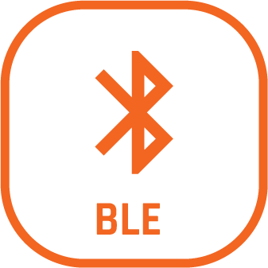
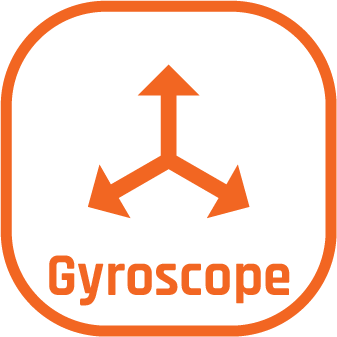
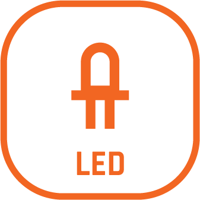
Você tem dúvidas?
Como aumentar a segurança dos dados da sua empresa?
Como manter a segurança?
Como prevenir e monitorar?
Se preferir enviar-nos um e-mail, o formato é bastante rígido, por favor use este modelo. Envie-o para contato em rekall.com.br, com uma linha Assunto: contendo a palavra "contato".
A nossa missão
Construir soluções por meio de computação confiável, da nuvem à borda.
A nossa visão
Consolidar-se no mercado de soluções computacionais, em comprometimento com inovação e reinvenção digital.
Os nossos valores
Qualidade e confiabilidade de serviço, Transparência e verdade na atuação e inclusão digital.